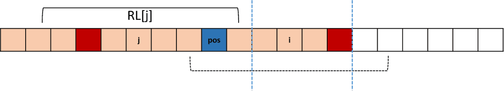

Given a string
s, partitionssuch that every substring of the partition is a palindrome.Return the minimum cuts needed for a palindrome partitioning of
s.Example 1:
Input: s = "aab" Output: 1 Explanation: The palindrome partitioning ["aa","b"] could be produced using 1 cut.Example 2:
Input: s = "a" Output: 0Example 3:
Input: s = "ab" Output: 1Constraints:
1 <= s.length <= 2000sconsists of lower-case English letters only.
初识回文字符串的时候，觉得这是个很棘手的问题，毕竟涉及到正序逆序的检索问题，光是字符串匹配和正则表达式都能整出DFA和NFA这种复杂的状态机，何况是回文字符这种感觉状态机似乎都没什么办法的问题。没想到的是，回文字符的识别手段如此简单粗暴，就是寻找中心点，然后从中点向外的边扩展边匹配，原理上是没问题的，但是一般在讲解玩暴力解法之后，都会给出更加优雅精妙的优化版算法，但是在回文字符串的问题上，似乎到这里就戛然而止了，可能跟自己接触回文字符串的方式有关，因为自己并不是在教材上看到这个问题的，而是直接在OJ上面临这个问题的，最初理所当然的用暴力解法先过一遍，没想到居然AC了，后面就没有对这个问题进行过更多的思考了，直到遇到这个加强版的回文字符问题，检测substring是否是回文字符，并且暴力解法完全无法AC，这才逼迫自己想办法优化暴力解法。
问题解析
substring 回文字符检测，在132题之前，其实有一个131 Palindrome Partitioning I 的 medium版本，要求输出所有可能的s 的 substring 切分，并且以列表的形式返回所有可能的切分，原理上此问题是131问题的子集，因为既然都已经输出了所有可能的切分，那么搜索最短切分只需要列出所有切分的长度，取最小即可；然而在OJ的设置上，这样是没办法在132上AC的，因为我在131用的仍然是暴力的解法小改版，只不过在切分的时候发现可能会面临重复递归调用的问题，也就是动态规划DP常常解释的，重复子结构的问题，我采取的备忘录的方式来缓解自顶向下调用时的重复调用问题，在完全没有构思出DP递推式 的前提下，就这样压线AC了，搞得我自己都不知道，这个AC的代码究竟用的是递归还是DP。
# 131 Palindrome Partitioning I
class Solution:
def partition(self, s: str) -> List[List[str]]:
res = []
memo = {}
self.splitPalindrome(s, [], res, memo)
return res
def isPalindrome(self, s, memo):
if len(s) == 0:
return False
if len(s) == 1:
return True
if s in memo:
return memo[s]
news = '_'.join(s)
mid = len(news) // 2
for i in range(1,mid+1):
pre = mid - i
post = mid + i
if news[pre] != news[post]:
memo[s] = False
return False
memo[s] = True
return True
def splitPalindrome(self, s, rs, res,memo):
if len(s) == 0:
res.append(rs)
return
if len(s) == 1:
res.append(rs+[s])
return
for i in range(1,len(s)+1):
if self.isPalindrome(s[ :i], memo):
self.splitPalindrome(s[i: ], rs + [s[ :i]], res, memo)
return
主要思路还是围绕DFS为主，通过不断的切分s，达到给rs添加成员的目的，直到最后s划分完毕，添加到res中，围绕一个s不断划分是有指数级别的可能性，针对不同的切分区域可能会有相同的substring出现，用memo来缓存，最终AC.
相同的思路在此题是行不通的，这也是这题是Hard的缘由，故意设置的陷阱，所以就需要找到可以优化的点。
首先，搜索最小切分次数和遍历所有切分可能，其实还是有比较大的优化空间，因为前者的达到最小切分条件即可立即返回，后者则是需要遍历所有可能才返回。难点就是如何定义最小切分条件，其实最小切分条件这个定义似乎跟最优子结构的定义很相似，比如，算法导论 讲到 动态规划时，解释最优子结构的核心的时候用到的切钢筋的示例，给定一个长度为n的钢筋，其最优的切割方法实际是确定的，这个确定的切割方法就可以作为一个结果供后续上层调用，即是，最优解一定由子问题的最优解组成。问题是，除了长度n的约束外，最主要的约束条件是string的起点和终点，即$s[i][j]$ ，因为不同于切钢筋，不同部位的的钢筋，只需要长度一样，就看作同样的；这里不同的substring，是否是回文字符的可能性不同，那么这就涉及到是否可以的切分的一个约束条件，也就是作为最优子结构，还有一个前提的是否是回文字符的条件，这就需要知道所有可能的$s[i][j]$是否是回文字符串的情况，貌似这个问题本身也是一个至少需要$O(N^2)$的复杂度的问题，因为遍历所有可能的substring 至少需要$O(N^2)$；其实当初分析到这里，心里觉得多少有点没底，所以也就没朝着这个方向努力，还在想各种其他Trick，最后都没有成功，还是回到了先如何实现判断所有substring是否是回文的方向上来。
最长回文子串问题 Longest Palindrome Substring
曾经看过一篇最长回文子串的博文，除了1.暴力解法和2.在间隙中添加标记字符来作为对称中点来解决奇数和偶数字符串对称轴不同的问题的$O(N^2)$解法，还有一种在解法2的基础上寻找非常细微的优化点的Manacher算法，不过这个算法过于精细，以至于我只记得大概的算法优化点，完全不记得细节了，所以没办法用上，这个之后再讨论；但是篇博文最后的动态规划解法比较好理解，直接就是遍历$s[i][j]$的上三角部分，然后根据dp递推式$dp[i][j] = dp[i+1][j-1] ,if \quad s[i]==s[j] $ ，由于$dp[i][j]==dp[j][i]$，所以只需要求出上三角即可
# dp 求substring 上三角是否是 回文字符
def longestPalindrome(self, s):
length = len(s)
dp = [[False]*length for _ in range(length)]
for i in range(length):
j = i
while j >= 0:
if s[j] == s[i] and (i-j<2 or dp[j+1][i-1]):
dp[j][i] = True
j -= 1
return dp时间复杂度$O(N^2)$，似乎和改进后的暴力解法差不多，不过够用了。
后来受到这个启发，发现改进的暴力解法$O(N^2)$也可以AC，这里也直接给出
# 普通 O(N**2) 解法
def longestPalindrome(self, s):
length = len(s)
d = [[False]*length for _ in range(length)]
news = '_'.join(s)
for i in range(len(news)):
d[i//2][i//2] = True
end = min(i, len(news)-i)
flag = True
for j in range(1,end+1):
pre = i-j
post = i+j
if news[pre] != '_' and flag:
if news[pre] == news[post]:
d[pre//2][post//2] = True
else:
flag = False
return dDFS搜索最短切分
接下来就是常规的，DFS来切分并累加切分次数，跟131题套路类似，都需要判断切分前是否直接本身就是回文，必须满足这个条件之后才能继续切分
# s2-1 自顶向下 备忘录dp AC 456ms
def calLength(self, start, s, dp, memo):
if start == len(s):
return 0
if start == len(s)-1:
memo[start][len(s)-1] = 1
return 1
if dp[start][len(s)-1]:
memo[start][len(s)-1] = 1
return 1
if memo[start][len(s)-1] != 0:
return memo[start][len(s)-1]
res = float('inf')
for i in range(start, len(s)):
if dp[start][i] :
res = min(res, self.calLength(i+1, s, dp , memo))
memo[start][len(s)-1] = res + 1
return memo[start][len(s)-1]最后成功AC
除了DFS，还在想是否可以改造成DP算法，顺便把之前没有写成的递推公式也顺便推导一下，这个阶段的DP和前面求最长回文子串不是一个问题，所以递推式需要重新归纳总结：
$dp[i][j] = min(dp[i][k] + dp[k+1][j] + 1) ,if \quad s[i:j+1]$不是回文字符串
由于需要用到 dp 中i-j 之间的所有值，可以采用类似希尔排序的类似的逐渐递增gap的方式，每个新的gap计算之前，旧的更小的gap的所有片段dp值都已经计算出来
def calLength(self, s, dp ):
length = len(s)
dp_2 = [[0]*length for _ in range(length)]
if dp[0][length-1]:
dp_2[0][-1] = 0
return dp_2
# s1 gap dp
for gap in range(1, length):
for i in range(length-gap):
j = i+gap
if not dp[i][j]:
r = float('inf')
for k in range(i, j):
r = min(r, dp_2[i][k] + dp_2[k+1][j] + 1)
dp_2[i][j] = r
return dp_2时间复杂度$O(N^3)$，结果自然也是TLE，不过目前至少没看到算法层面的错误，或许能有办法优化成$O(N^2)$的算法，目前还没看出怎么改进。
Manacher算法
从原来上来讲，其实这应该是很微妙的一个优化，就是一步一步计算每一个字符包括间隙为中心点的回文字符的最大长度RL[i]，由于i之前的RL都是已经计算出来的，寻找某个包括i的pos为中心的最长RL[pos]，此时以pos为对称轴，寻找i的对称点j


由于RL[j]已知，那么这个RL[j]就可以做RL[i]的起点，这样RL[i]就不需要从0开始计算，但是由于RL[j]的长度可能会超过pos，这样就需要分2种情况来寻找R[i]的起点,一种是较短的情况，如上图，另一种是超过pos，如下图，就需要降低RL[i]的起点为从蓝色部分开始

当然还有最后一种情况，就是i已经超过了maxRight ，则需要从0开始计算
def manacher(s):
s = '_'.join(s)
rl = [0]*len(s)
maxRight = 0
pos = 0
maxLen = 0
for i in range(len(s)):
if i < maxRight:
rl[i] = min(rl[2*pos-i], maxRight-i)
else:
rl[i] = 1
# 尝试扩展边界rl[i]
while i-rl[i]>=0 and i+rl[i]<len(s) and s[i-rl[i]]==s[i+rl[i]]:
rl[i] += 1
if rl[i]+i-1>maxRight:
maxRight = rl[i] + i -1
pos = i
maxLen = max(maxLen, rl[i])
return maxLen-1虽说声称时间复杂度是$O(N)$，但是我看代码怎么都像是$O(N^2)$，起码最坏的情况下我想应该是的，假如每次求得的对称RL[j]都接近0，那么RL[i]就得从头遍历，但是另一方面，RL[j]本身就很快的返回了，如果RL[j]很长，那么对应的RL[i]就收益，可以高起点开始计算；从这个角度来看，起码能节省一半的时间，正常情况下应该介于$O(N)$和$O(N^2)$之间，真实情况如何，我也不是很确定。
Conclusion
终于有机会把回文字符这块好好的补习了一下，初识manacher算法认真来讲，是有点失望的，相比于NFA还有最短路径之类的神奇算法，这个有点小打小闹的优化改进，不过还是不得不佩服，就这么一个$O(N^2)$的算法，硬是被人找到机会给优化掉了，真的不能小看程序员想要改进算法的决心啊！
Reference: